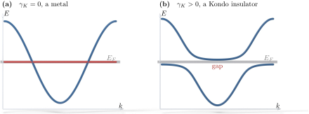

Advanced Quantum Materials 2027 · All lectures · Lecture notes
Session 8. Quantum Magnetism, Spinons and Kondo Physics
8.11 From a single Kondo impurity to the Kondo lattice
Now that we have the method for quantum spin liquids, the lecture moves to a second physical system, which is quite different but which can be solved with the same method. This is the Kondo lattice model, which appears whenever a metal and a correlated system of local moments exist together.
Let us start with the simplest case, which is a single spin-\(1/2\) magnetic impurity in a non-interacting two-dimensional electron gas. The total Hamiltonian is a free kinetic term with a dispersion for the conduction electrons, plus a Heisenberg-like coupling between the spin of the impurity and the local spin density of the conduction electrons at the impurity site,
\[H = -t\sum_{\langle ij\rangle,\sigma}\Big(c^\dagger_{i\sigma}c_{j\sigma} + \text{h.c.}\Big) + H_K, \qquad H_K = J_K\sum_{\alpha\beta}\Big(c^\dagger_{0\beta}\,\boldsymbol\sigma_{\beta\alpha}\, c_{0\alpha}\Big)\cdot \mathbf S, \tag{8.17}\]
where \(H_K\) is the Kondo coupling. To solve this problem exactly is hard. However, we can describe the ground state in a simple way, even without the full solution. The spin of the impurity forms a singlet, which has the same structure as (8.3), with an effective conduction electron close to it,
\[|GS\rangle \sim \frac{1}{\sqrt2}\Big(|{\Uparrow\downarrow}\rangle - |{\Downarrow\uparrow}\rangle\Big),\]
and the rest of the electron gas behaves as a Fermi sea without interactions. This is a good approximation to the many-body ground state. The resulting state has total spin zero and does not break time-reversal symmetry, so even if it has a real local moment, it is already a quantum magnet in the sense of Section 8.1.
Let us now generalize this to a whole lattice of magnetic impurities, with one impurity per site, where each impurity is coupled to the same bath of conduction electrons,
\[H = -t\sum_{\langle ij\rangle,\sigma}\Big(c^\dagger_{i\sigma}c_{j\sigma} + \text{h.c.}\Big) + J_K\sum_{j,\alpha\beta}\Big(c^\dagger_{j\beta}\,\boldsymbol\sigma_{\beta\alpha}\,c_{j\alpha}\Big)\cdot \mathbf S_j. \tag{8.18}\]
Every impurity again tends to form a singlet with a conduction electron close to it. Since many impurities compete for the same sea of electrons, the electrons that screen the impurities are shared, in a fractional way, between the singlets of different impurities. The result is a state with a large entanglement over the whole lattice, between all the magnetic sites and the electron gas, while the total spin stays exactly zero.
Notebook check-in: session8.ipynb, “Magnetization of a large Heisenberg model with a magnetic impurity” (Challenge) and “Magnetization of a dimerized Heisenberg model with a magnetic impurity” (Challenge)
These exercises show, numerically and in real space, how the local field of a single magnetic impurity decays with the distance in a quantum magnet that is otherwise gapless or dimerized. The gapless chain shows an algebraic and staggered decay, which follows the correlation profile of a critical spin liquid. The dimerized chain of Section 8.5, which is a valence bond solid, shows instead an exponential decay over a finite correlation length, because its ground state is gapped. This is the same physics of the screening cloud as in (8.17), seen from the side of a single chain in real space and not from the side of itinerant electrons.
8.12 Solving the Kondo lattice with the parton method and a hybridization
The lecture makes the parallel with Section 8.8 explicit, since we solve this problem in the same way as we solved the QSL. We replace every impurity spin by an Abrikosov fermion, \(\mathbf S_j = \tfrac12 f_{j\alpha}^\dagger \boldsymbol\sigma_{\alpha\beta} f_{j\beta}\), with the same single-occupancy constraint (8.11), which we write here in the equivalent traceless form
\[S_{\alpha\beta}(j) = f^\dagger_{j\alpha}f_{j\beta} - \frac{n_f(j)}{2}\delta_{\alpha\beta}. \tag{8.19}\]
When we insert this into (8.18), the Kondo coupling becomes a real quartic interaction. Now it does not couple the auxiliary \(f\) fermions to the \(f\) fermion of another site, as in (8.13), but to the real conduction electrons \(c_{j\sigma}\) on the same site,
\[H \sim \sum_{\mathbf k\alpha} \varepsilon_{\mathbf k}\, c^\dagger_{\mathbf k\alpha}c_{\mathbf k\alpha} \;-\; J_K\sum_{j,\alpha\beta}\Big(c^\dagger_{j\beta}f_{j\beta}\Big)\Big(f^\dagger_{j\alpha} c_{j\alpha}\Big). \tag{8.20}\]
As in (8.14), we decouple this quartic term at the mean-field level, with the expectation value \(\langle c^\dagger_j f_j\rangle\), and we do a Fourier transform to momentum space. This gives a bilinear Hamiltonian that mixes real electrons and auxiliary fermions,
\[H \sim \sum_{\mathbf k\alpha} \varepsilon_{\mathbf k}\, c^\dagger_{\mathbf k\alpha} c_{\mathbf k\alpha} \;-\; \gamma_K \sum_{\mathbf k,\alpha} f^\dagger_{\mathbf k\alpha}c_{\mathbf k\alpha} + \text{h.c.}, \tag{8.21}\]
where \(\varepsilon_{\mathbf k}\) is the conduction band dispersion and \(\gamma_K\) is the Kondo hybridization. The hybridization is the only mean-field parameter, it is determined self-consistently, and it contains all the information about the strength of the original Kondo coupling \(J_K\).

In the Kondo lattice (8.18) every impurity wants a singlet with a conduction electron close to it. What is the consequence of having many impurities?
Show the answers
- A. ✓ True
This is true. The number of conduction electrons is not larger than the number of impurities, and all impurities draw from the same sea. The singlets are then fractional and entangled over the lattice.
- B. ✗ False
This is false. The Kondo coupling does not create electrons. With \(0.5\) conduction electrons per site, only half of the impurities could get one, and the density stays \(0.5\).
- C. ✗ False
This is false. At half filling the \(f\) fermions hybridize with the conduction band, which opens a gap \(2\gamma_K\) as in the Kondo insulator. Decoupled impurities could not do this.
In (8.21) with \(\gamma_K=0\), what is the energy of the \(f\) band?
Show the answers
- A. ✗ False
This is false. The \(f\) fermions have no hopping. At \(\mathbf k\) with \(\varepsilon_{\mathbf k}=2\), say, the conduction band is at \(2\) and the \(f\) level is still at \(0\).
- B. ✓ True
This is true. The auxiliary fermions have no hopping of their own, and the only term that involves them is the hybridization. Without it their levels sit at zero energy, which is the chemical potential of the constraint.
- C. ✗ False
This is false. The constraint asks for one \(f\) fermion on each site, so there are \(N\) of them for \(N\) sites. They are still in the Hamiltonian, at energy zero.
Try it. Run the three values of JK and follow the flat band. Check that the crossing with the conduction band is replaced by a gap, and that the gap grows from \(J_K=0.25\) to \(J_K=0.5\). Then change add_onsite(-2.0) and see if the gap stays at the Fermi level.